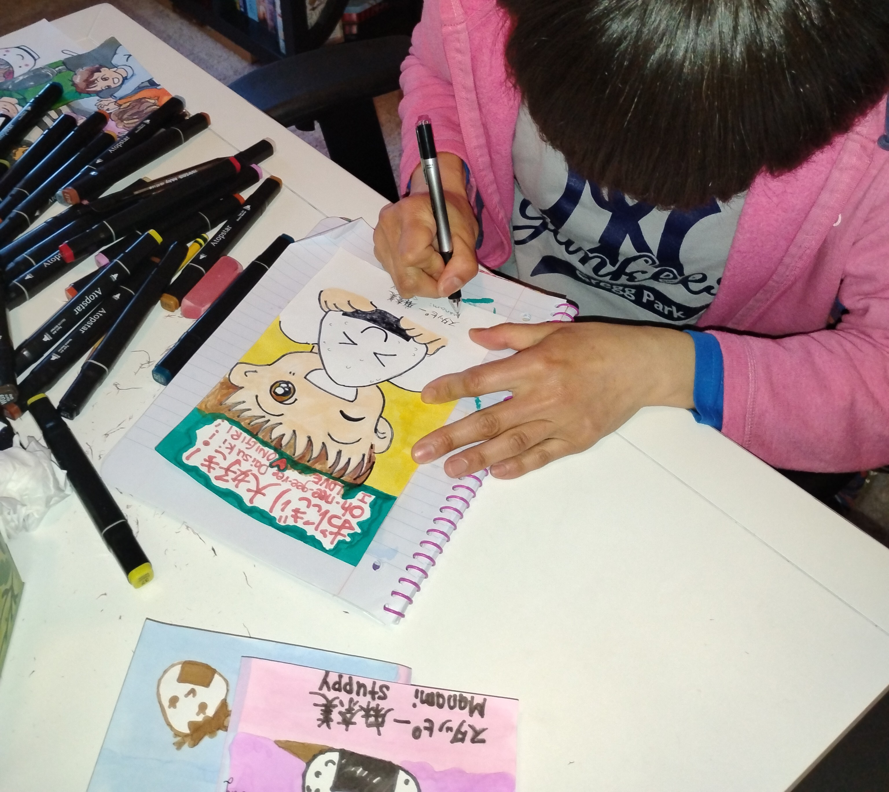
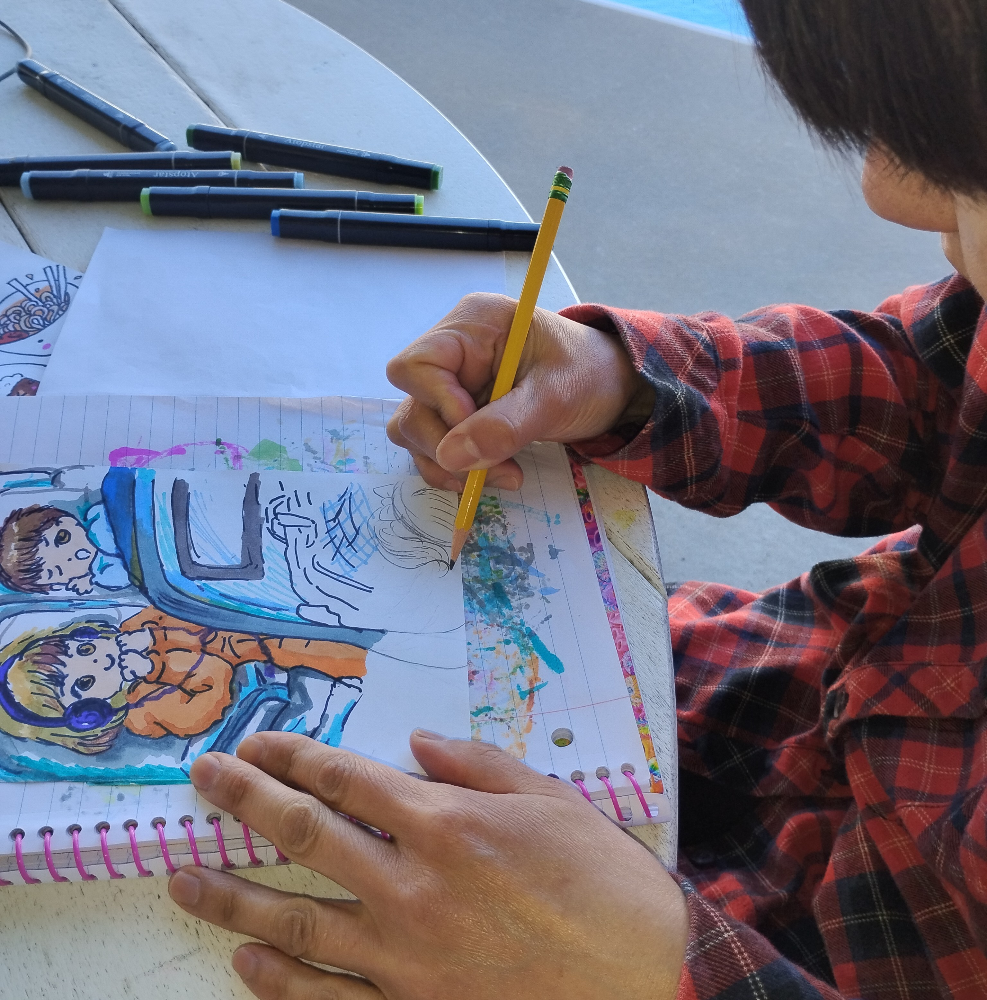
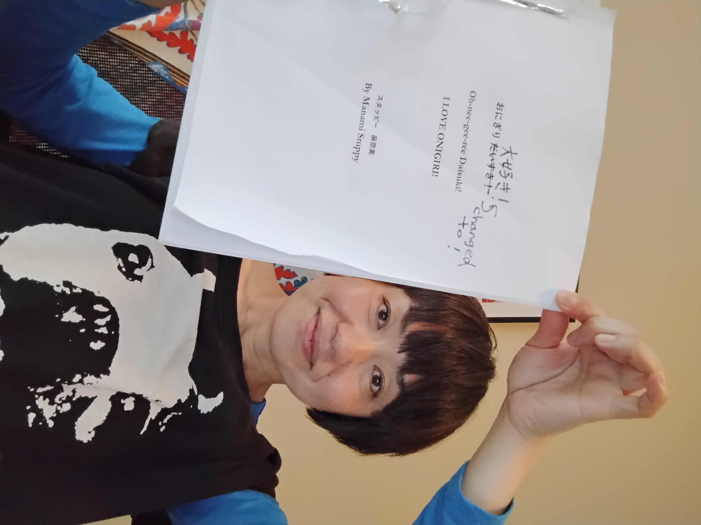

Japanese Bilingual Author ・ Illustrator ・ Comic Artist
日本語バイリンガル作家・イラストレーター・漫画アーティスト
私の歩み



こんにちは! My name is Manami Stuppy. I was born and raised in Japan and later moved to the United States.
こんにちは。Manami Stuppyです。 日本で生まれ育ち、その後アメリカへ移住しました。
For many years, I worked in bilingual communication, translation, and language-related work. But art was always quietly living inside me.
長年、バイリンガルコミュニケーション、翻訳、通訳、 言語に関わる仕事をしてきました。 でも、心の中にはいつもアートがありました。
Eventually, I combined my Japanese roots, love of language, and illustration into bilingual books and manga-inspired artwork.
やがて、日本で育った経験、言葉への愛情、 そしてイラストを組み合わせて、 日本語と英語の本や漫画風の作品を作るようになりました。
Today, I create books, comics, and artwork to bring joy, warmth, and learning.
今は、本、漫画、イラストを通して、 楽しさ、あたたかさ、そして学びを届けたいと思っています。